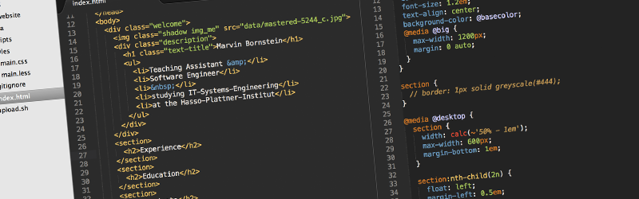
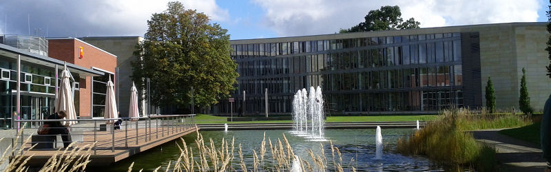
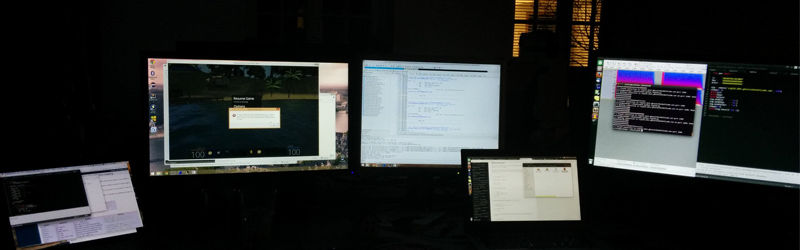
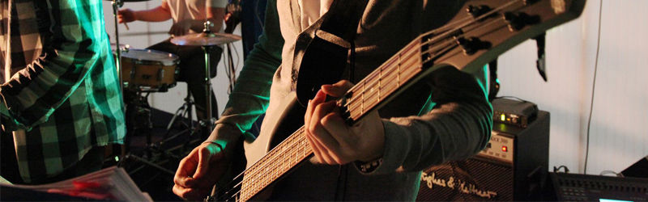
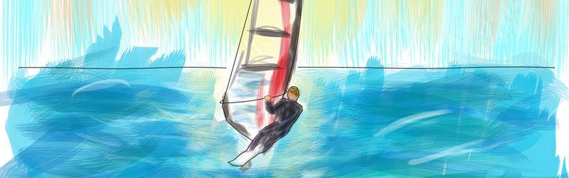
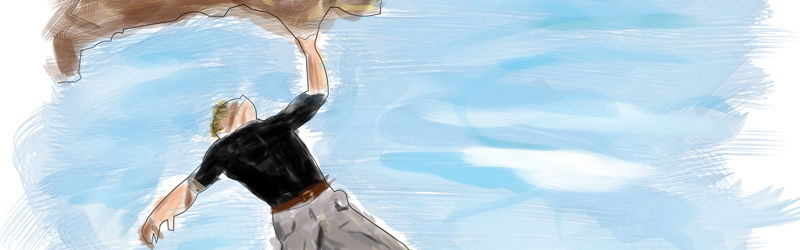

Marvin Bornstein
- Teaching Assistant &
- Software Engineer
-
- studying IT-Systems-Engineering
- at the Hasso-Plattner-Institut
Also find me on:
LinkedIn
|
CTF Time
|
GitHub
|
Mail

Experience and Projects
Within my work as student assistant, I earned the most experience about developing in a team. The biggest project was openHPI, were I worked for 15 months. Always have a look at my PDF Resume.
A few projects I contributed to, can be found on Github. For a computer graphics seminar, a fellow student and I worked on a 3D Scene viewer developed in C++ with Qt and OpenGL and implemented Cascaded Variance Shadow Mapping. Within a software technique and architecture course, we created the Morphic Testing Framework, which is a small framework to test the morphic UI of squeak smalltalk (like selenium for web applications). Lastly, for an HCI course, we built a fitness application for interactive floors, after a design thinking like process (see our paper).

Education
Currently, I am studying IT-Systems Engineering at the Hasso-Plattner-Institute (HPI) in Potsdam. We learn a lot about programming and software architecture besides general computer science topics. In particular, I gained deeper knowledge about Internet technologies, information security and computer graphics.
In the last 2 semesters of the bachelors degree, I had the possibility to do a project with a business partner and 5 fellow students. We have worked with Colgate-Palmolive and implemented a dynamic algorithm for real-time routing and clustering, using the SAP HANA in-memory technology with on-the-fly aggregated sales data. This enables Sales Representatives in France to negotiate products and promotions with retail stores more efficiently.

Hackathons and CTFs
Since I am fascinated by OS and internet security, I regularly participate in open CTFs (capture the flag in infosec) together with my university team. (check us out here)
Furthermore, two friends and I won the third prize at GDG DevFest 2014 (a Hackathon sponsored by Google and Immobilienscout24: Google+ Event Photos). It was an awesome weekend event with lots of good talks about recent web, android and cloud topics. We developed a multiplayer 'halli galli' game as a webapp, that is played with smartwatches using the built-in motion sensor.

Music and Bands
Back in 2005, I joined the Fanfarenzug Strausberg as a drummer and started to learn playing the guitar after on. I took guitar lessons for 7 years in different music schools and am now practicing myself. Before my studies at the university, I played in several bands as a guitarist and bassist. We performed on dancing school and high school events. Nowadays, I meet with fellow students and colleagues to play just for fun.
Photography and Filmmaking
Even though I chose the music path early in my life and rejected arts, I finally got into photography and bought myself a DSLR. I try to tease everything out of my gear. Because of the great open source culture, I can do even more using the Magic Lantern firmware. Feel free to check some pictures out here.


Sports
Back in school I used to ride my bike a lot, but today I rarely have to overcome long distances. This is why I joined the local fitness centre and took some university sports courses. Windsurfing for example was a lot of fun, I even passed the windsurf exam and got the international basic license. Later, I started to boulder indoor. After times with aching hands, I find myself improving from time to time. Because there are so much kinds of sports to discover, I also enrolled for the parcours course in 2015.